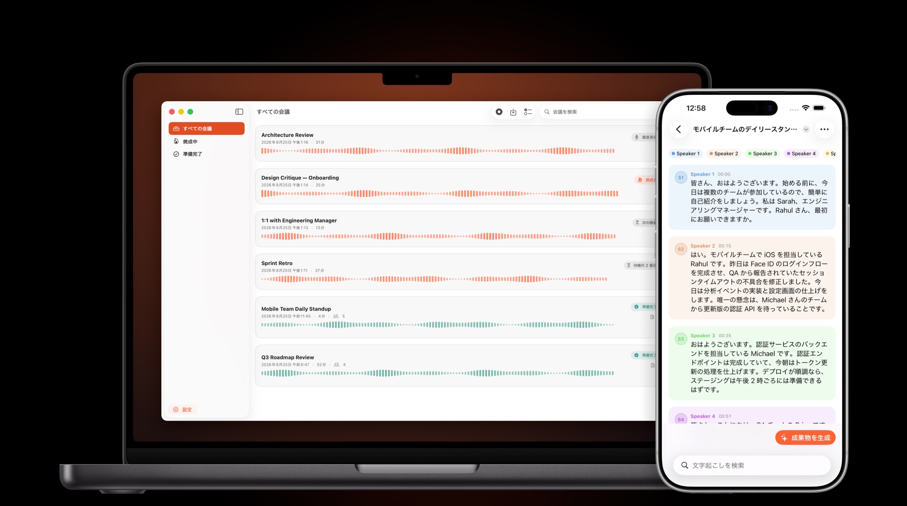
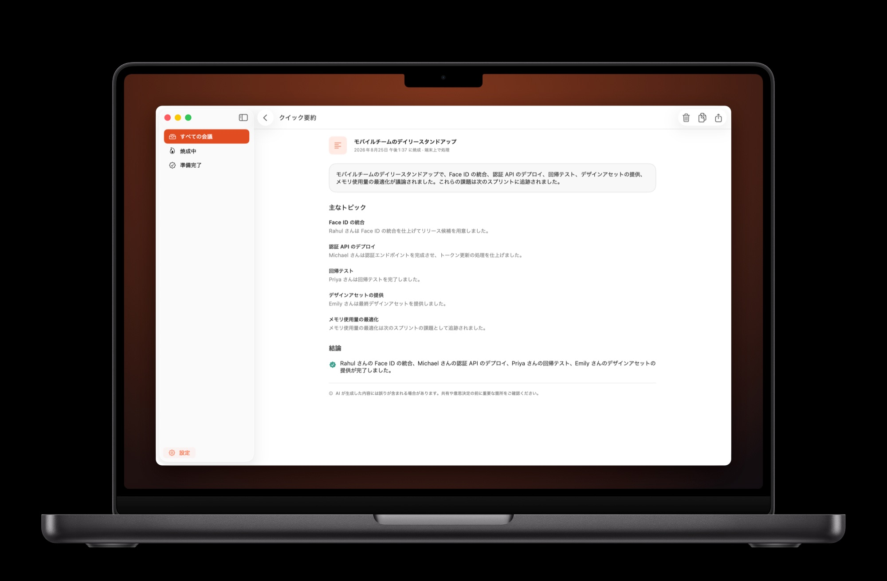
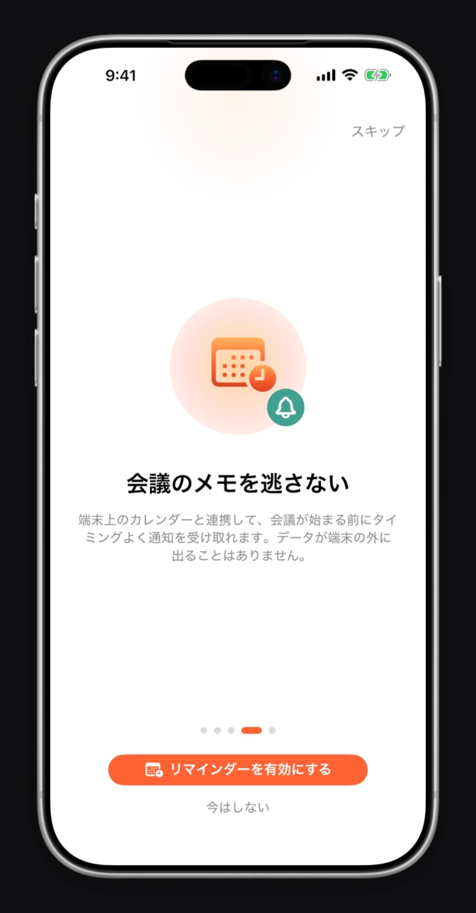

Kiln 4.1 の新機能
会議のメモを逃さない。
Kiln は端末上でカレンダーを読み取り、会議が始まる直前に通知します。予定を編集することはなく、予定が端末の外に出ることもありません。
リマインダーをタップすれば、会議名が入った状態で Kiln が開き、すぐに録音を始められます。
Kiln
文字起こしも、要約も、Jira ストーリーも。すべて Mac、iPhone、iPad の中で作られます。
無料 · アカウント不要 · 9 つの言語

会議を録音するか、読み込むだけ。Kiln が声を聞き分け、文字起こしを作り、本来ならあなたが書くはずだったドキュメントに仕上げます。そのすべてが端末の中で行われます。Kiln が音声、文字起こし、レポートをどこかへ送信することはありません。
レポート
どれも文字起こしをもとに、会議の言語のまま書かれます。1
1 分で要点を — 概要、トピック、結論
扱われた概念を例とともに深く掘り下げます
担当者と優先度付きのタスク
すぐ着手できるエピック、ストーリー、受け入れ基準
理由・影響・リスクを添えた決定事項
参加者、アジェンダ、議論、結果
すぐ送れる、丁寧なフォローアップ
新機能、改善、修正、既知の問題

プライバシー
Kiln は独自のサーバーを持ちません。会議は端末の中で処理され、Kiln がそれをどこかへ送信することはありません。
文字起こし、話者分離、タイトル、レポートは、すべてローカルで動作します。使うのは Apple の端末内フレームワークと、アプリに同梱された話者分離モデルです。
ネットワーク接続の権限を持たないまま配布されているため、どこにも何も送信できません。
登録は不要。トラッキング、広告、解析のコードも一切含まれていません。
会議を削除すると、その音声、文字起こし、話者の記録、そこから作られたすべてのレポートも一緒に削除されます。
言語
Kiln は 9 つの言語を文字起こしし、各レポートを英語に訳すことなく、会議の言語のまま書き上げます。2 Kiln の画面も 9 言語すべてで表示でき、端末の言語とは別に設定できます。

Kiln 4.1 の新機能
Kiln は端末上でカレンダーを読み取り、会議が始まる直前に通知します。予定を編集することはなく、予定が端末の外に出ることもありません。
リマインダーをタップすれば、会議名が入った状態で Kiln が開き、すぐに録音を始められます。
Mac、iPhone、iPad
Mac、iPhone、iPad のためのネイティブアプリ。それぞれにふさわしい工夫を凝らしています。